A collection of self-contained examples to use for learning and inspiration.
- Bing Image Search
- Phone application which implements a Bing Image search. Image thumbnail search results displayed in a photo grid. Tapping an image thumbnail expands to full size. Note - This example requires the 'accountKey' variable set to a valid Windows Azure Marketplace account key associated with a Bing Search API subscription.
- Browser
- This example demonstrates how to implement an embedded web view container. The code embeds the web view with a browser container. This example demonstrates how to display a web page in the browser, support browser forward/backwards navigation, implement callbacks when the web page is loading/loaded, display a busy indicator using the mobile framework and use anchor references to containers. Note that the browser container is not available on Windows or Kinoma Create.
- Camera
- A simple camera app supporting live preview and capture. This example demonstrates how to integrate the camera media reader with a picture container, use the Files object to write the captured image to storage, transitions between screens, detecting the platform at runtime, adapting container layouts to device orientation changes, using canvas to implement a button and one-shot sounds. Note - camera support is currently limited to Android phones, but this app includes a mockup implementation for the Kinoma Studio desktop simulator.
- Controls
- This example demonstrates how to integrate mobile framework buttons and behaviors into your application. Button types include push, checkbox, radio and radio group.
- Dialogs
- Dialog example
- Discovery
- This sample demonstrates how to use the built-in SSDP support to implement a remote viewer. Remote viewer applications on the same network are discovered and share an avatar photo and message. Each client displays the avatars discovered using a bounce-style animation implemented by a behavior. You can change the photo and message shared by remote viewer applications to make each avatar unique. This example is useful for learning how to build a client/server discovery application, detect devices added and removed, implementing a custom animation and invoke requests to remote application servers.
- Flickr Photo Grid
- This sample code demonstrates how to implement an interactive scrolling photo thumbnail grid. Tapping the photo thumbnail opens the full size image using a zoom transition. The image thumbnails are retrieved from a Flickr public feed using a tag search. The resulting data set is delivered in JSON format. This is a good example of how to display images, adapt the layout to device orientation changes, use tool buttons or swipe to navigate between photos, invoke a message to fetch data from a REST API and mobile framework screen open/close transitions.
- Hello KPR
- A minimal application that creates a full-screen container and displays the text "Hello, KPR". Tapping the container changes the background color. Useful for understanding how to build a basic KPR application.
- Menu Button
- This example demonstrates how to use a mobile framework menu button. The menu button displays the currently selected item in an active label. When tapped a modal menu of choices is displayed. The newly selected item is returned to the caller using a handler.
- Device Orientation
- This example uses a layout container to demonstrate how to adapt layouts to device orientation changes. KPR calls the onMeasureVertically method in layout containers when the orientation changes. The example dynamically changes the container contents based on the current orientation.
- Periodic Update
- Basic digital clock driven by a periodic update implemented by a pair of handlers. The time handler notifies the application of the time change and then invokes the delay handler to wait 1/2 second. Once the delay has completed the time handler is invoked again. The technique is commonly used by applications that require periodic polling of a resource.
- Platform Identification
- A minimal application that reads and displays the host platform string using system.platform. Applications can query the platform string to wrap platform specific code.
- Preferences
- This sample demonstrates how to implement preferences which persist across application launches. The selected color swatch is stored across runs. The model.readPreferences function reads stored preferences and provides an optional third parameter used to initialize the preferences the first time. The model.writePreferences function saves the preferences. This example is also useful for learning how to build a container hierarchy using the KPR ECMAScript programming interface.
- Proxy Handler
- Displays an auto-scrolling horizontal view of photos. Photo images are fetched from a Flickr feed using a proxy handler which returns array of photo objects. A proxy handler is often used to filter data returned from a web service into a simplified format for use by the host application.
- Slideshow
- Displays a slideshow of images animating picture scaling, panning and opacity settings to implement Ken Burns style transitions. This example demonstrates how to dynamically add picture containers into the container hierarchy, distribute events to container behaviors, use a content timer to drive animations, display a busy indicator and invoke a HTTP request to fetch a photo collection from a public Flickr feed.
- Sound
- Displays a mockup camera preview with shutter button. Tapping the button plays a shutter sound. The application calls sound.play to play a WAVE file. This application also demonstrates how to use a transition to simulate the shutter closing and opening.
- Animated Spinner
- Displays a spinning busy graphic by rotating a custom graphic using a periodic timer. The busy graphic is displayed half size by setting the graphic's picture scale and origin properties.
- Spirograph
- Uses Canvas 2D to implement a virtual spirograph. Custom sliders control the radius and steps. This application demonstrates how to use canvas containers to render 2D drawing contexts, delegate and notify behaviors using container.distribute, and implement a basic touch slider control.
- Timers
- Demonstrates how to use different timer techniques. One-shot, interval, repeating, handler.wait and container.wait. An interval timer is used to animate skin states.
- Transitions
- Demonstrates how to use the Transitions library to configure and use a variety of transitions. The host application can further customize each transition by overriding the duration, easing function used for pacing time and specifying whether or not the former content should be removed once the transition completes.
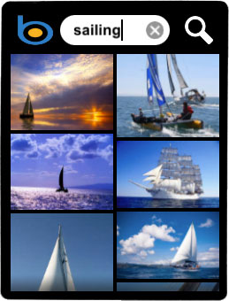
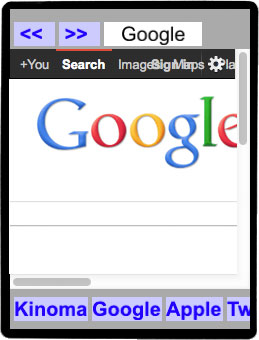
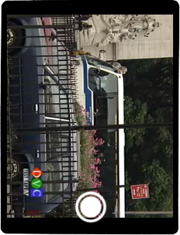
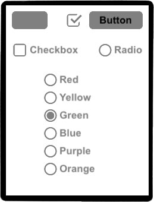
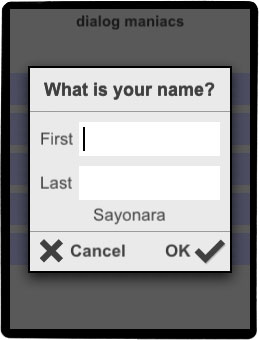
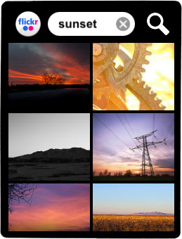
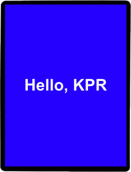
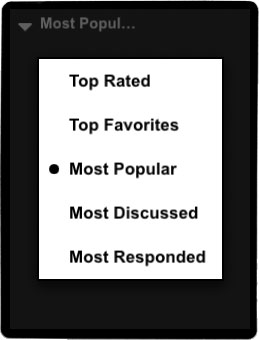
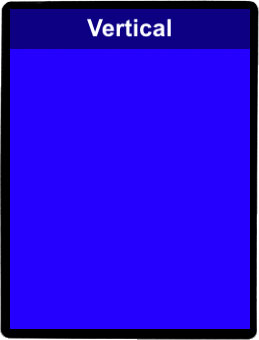
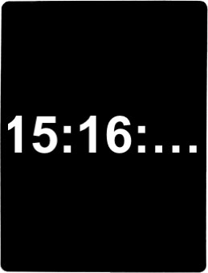
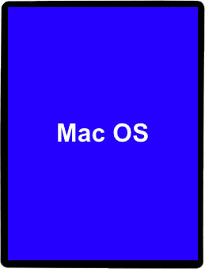
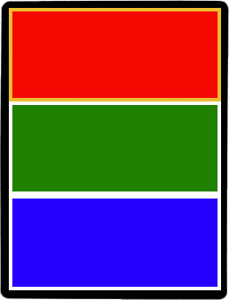
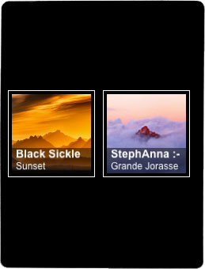
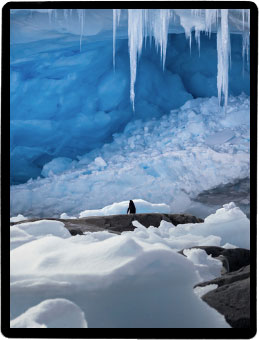
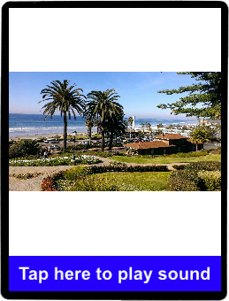
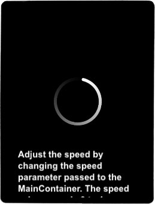
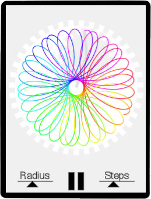
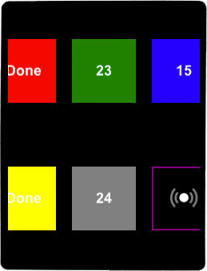
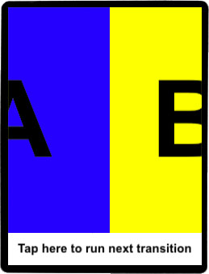